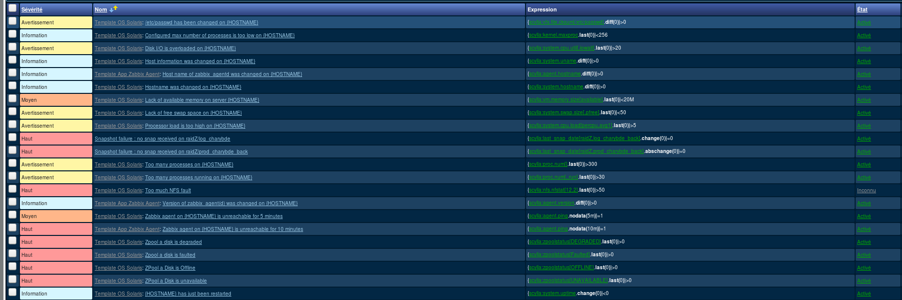

Monitoring
Speaker : Benoit Tellier
Retrieve this presentation online : https://rawgit.com/Open-Up/openup02_11/master/presentation/index.html
And on GitHub
Objectives
- Why monitoring is needed ?
- Understand how monitoring works
- Configure monitoring with Zabbix
You said monitoring?
Things will break
- Hardware troubles
- Electrical outage
- Disks full
- Memory, cpu, etc...
- Latencies
- Process not launched
- Conntrack full
- NAS unavailable
- And many others...
What can I do about it ?
- Collect metrics to understand outages
- Prevent future outages (alarms)
- Metrics about the system : better understand it
Graphics
Screens
Alarms
Zabbix
- Server for aggregating metrics
- Web interface
- Zabbix client
# wget http://repo.zabbix.com/zabbix/3.0/debian/pool/main/z/zabbix-release/zabbix-release_3.0-1+jessie_all.deb
# dpkg -i zabbix-release_3.0-1+jessie_all.deb
# apt-get updateArchitecture
Installing Zabbix server
apt-get install mysql
apt-get install zabbix-server-mysql# vi /etc/zabbix/zabbix_server.conf
DBHost=localhost
DBName=zabbix
DBUser=zabbix
DBPassword=zabbixshell> mysql -uroot -p
mysql> create database zabbix character set utf8 collate utf8_bin;
mysql> grant all privileges on zabbix.* to zabbix@localhost identified by '';
mysql> quit;
# Either
shell> cd database/mysql
shell> mysql -uzabbix -p zabbix < schema.sql
# stop here if you are creating database for Zabbix proxy
shell> mysql -uzabbix -p zabbix < images.sql
shell> mysql -uzabbix -p zabbix < data.sql
# Or
shell> cd /usr/share/doc/zabbix-server-mysql
shell> zcat create.sql.gz | mysql -uroot zabbix
Installing Zabbix web interface
apt-get install apache2 zabbix-frontend-phpshell> vi /etc/apache2/conf-enabled/zabbix.conf
php_value max_execution_time 300
php_value memory_limit 128M
php_value post_max_size 16M
php_value upload_max_filesize 2M
php_value max_input_time 300
php_value always_populate_raw_post_data -1
# php_value date.timezone Europe/Rigaservice apache2 restartInstalling Zabbix client
apt-get install zabbix-agentTypes of metrics collected
- Direct checks from the server : ping, TCP check, HTTP check, etc...
- Preconfigured metrics on the Zabbix client : CPU, memory, etc...
- User defined metrics
Adding host
Defining elements
Defining triggers
Defining graphics
User defined triggers ?
UserParameter=mysql.ping,mysqladmin -uroot -pforlocalonly ping|grep alive|wc -l
UserParameter=mysql.uptime,mysqladmin -uroot -pforlocalonly status|cut -f2 -d":"|cut -f1 -d"T"
UserParameter=mysql.threads,mysqladmin -uroot -pforlocalonly status|cut -f3 -d":"|cut -f1 -d"Q"
UserParameter=mysql.questions,mysqladmin -uroot -pforlocalonly status|cut -f4 -d":"|cut -f1 -d"S"
UserParameter=mysql.slowqueries,mysqladmin -uroot -pforlocalonly status|cut -f5 -d":"|cut -f1 -d"O"
UserParameter=mysql.qps,mysqladmin -uroot -pforlocalonly status|cut -f9 -d":"
UserParameter=mysql.version,mysql -V
Good readings
Why you should not rely on average ? http://apmblog.dynatrace.com/2012/11/14/why-averages-suck-and-percentiles-are-great/
Too much monitoring ?
http://www.abc.net.au/technology/articles/2014/07/16/4047125.htm